Top Destinations in Southern Province
Discover the signature highlights and attractions across this province.
 Historical Sites
Historical Sites
Galle Dutch Fort
The finest surviving 17th-century European fortified citadel in South Asia, a UNESCO World Heritage site of cobblestone lanes, coral-stone bastions, and sunset ramparts.
 Beaches & Coastlines
Beaches & Coastlines
Unawatuna Beach & Coral Bay
A famous golden horseshoe-shaped bay protected by a natural coral reef, celebrated for safe swimming, beachside dining, and vibrant nightlife.
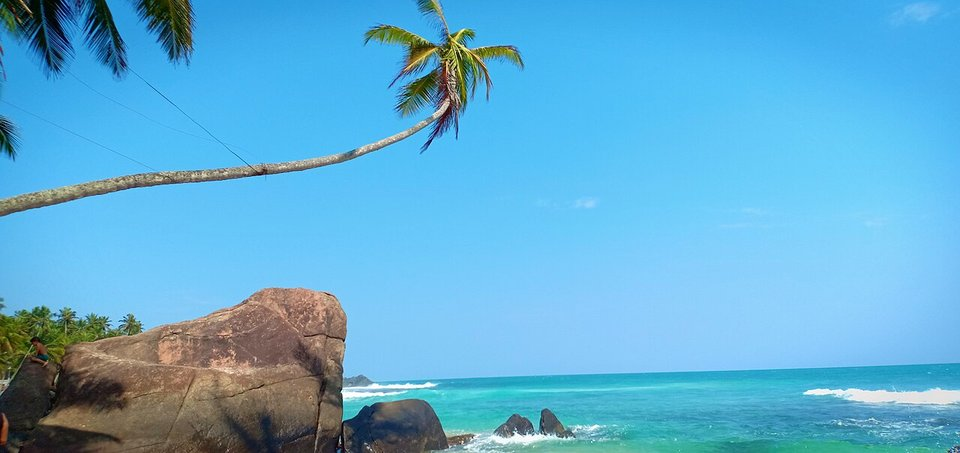
Beaches & CoastlinesDalawella Beach & Wijaya Palm Tree Swing
A postcard-perfect beach famous for the viral palm tree rope swing, sea turtles swimming in the natural rock reef pool, and Wijaya Beach restaurant.
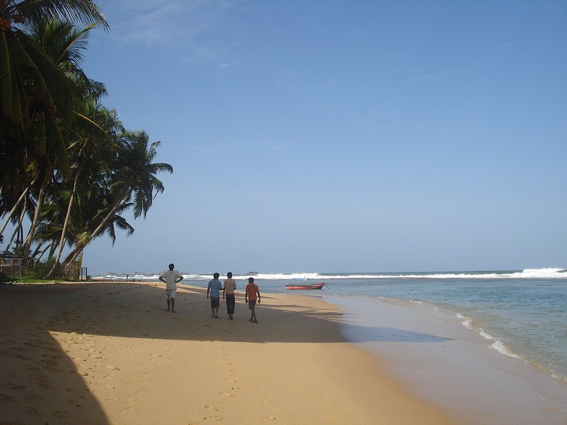
Marine & Diving AttractionsHikkaduwa Coral Reef Sanctuary & Beach
Sri Lanka's first marine national park, famous for a shallow fringing coral reef, wild green turtles, glass-bottom boat tours, and lively surf breaks.
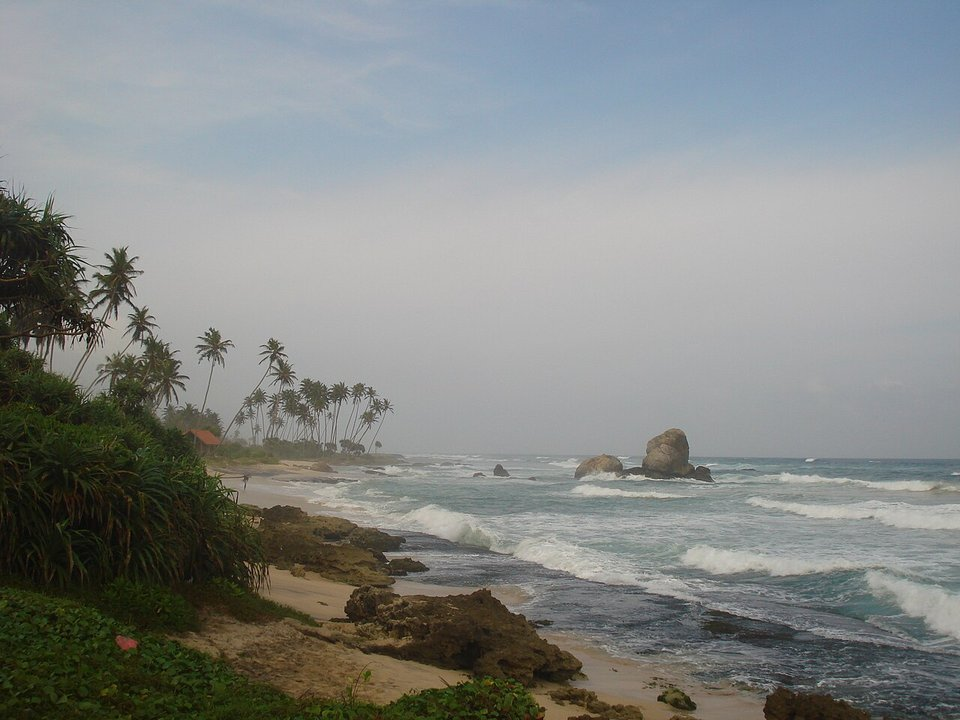
Lakes & ReservoirsKoggala Lake & Traditional Stilt Fishermen
A serene coastal lagoon studded with eight forested islands, cinnamon peeling demonstrations, and the iconic coastal stilt fishermen along the nearby reef.
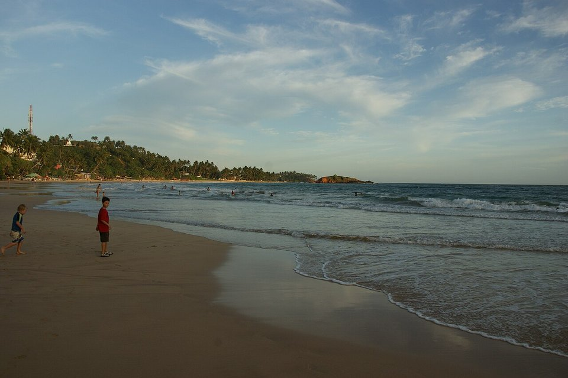
Marine & Diving AttractionsMirissa Beach & Whale Watching Sanctuary
The world's premier departure point for observing colossal Blue Whales and sperm whales in their natural habitat, paired with a lively crescent bay.
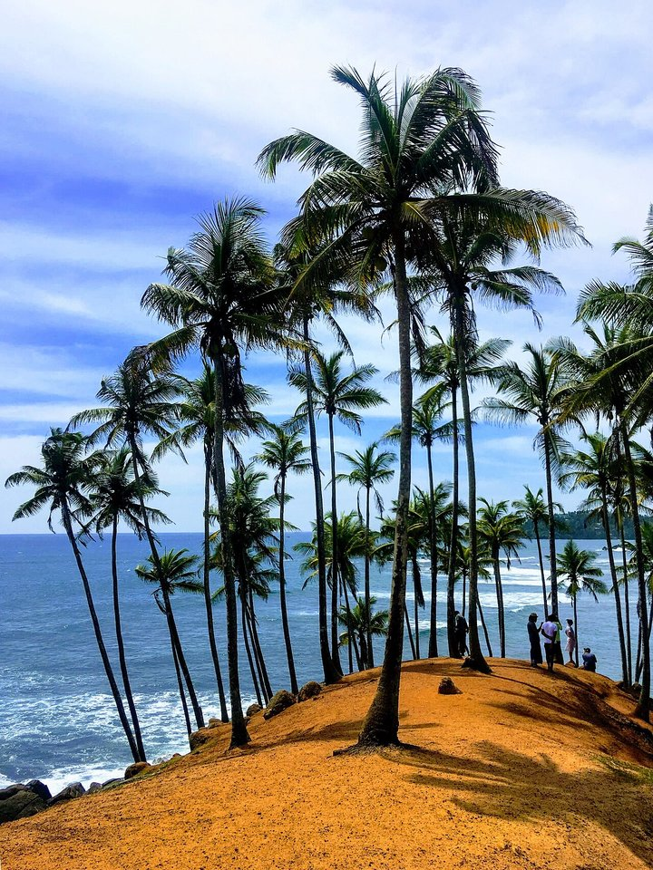
Viewpoints & PanoramasCoconut Tree Hill Mirissa
The world-famous promontory near Mirissa, where a grove of towering coconut palms overlooks the crashing Indian Ocean from a red-clay cliff.
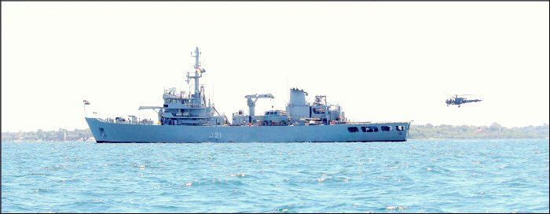
Beaches & CoastlinesWeligama Bay Surf Haven
South Asia's premier learn-to-surf beach, a vast crescent bay with gentle rolling sandy-bottom waves, surf schools, and the private islet of Taprobane.
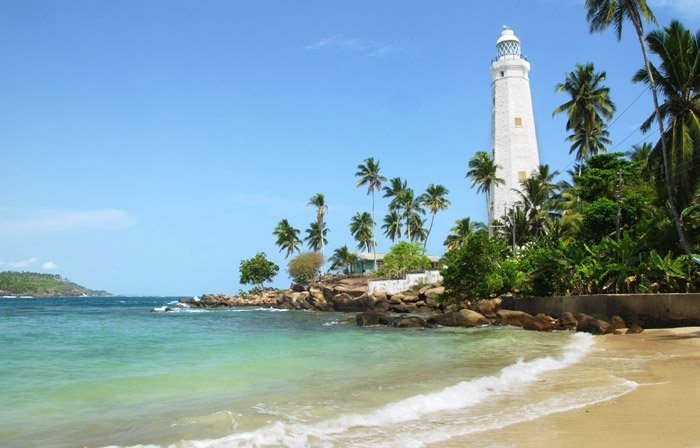
Historical SitesDondra Head Lighthouse
The tallest lighthouse in Sri Lanka and southernmost point of the island, an imposing 49-meter white octagonal stone beacon built in 1889.
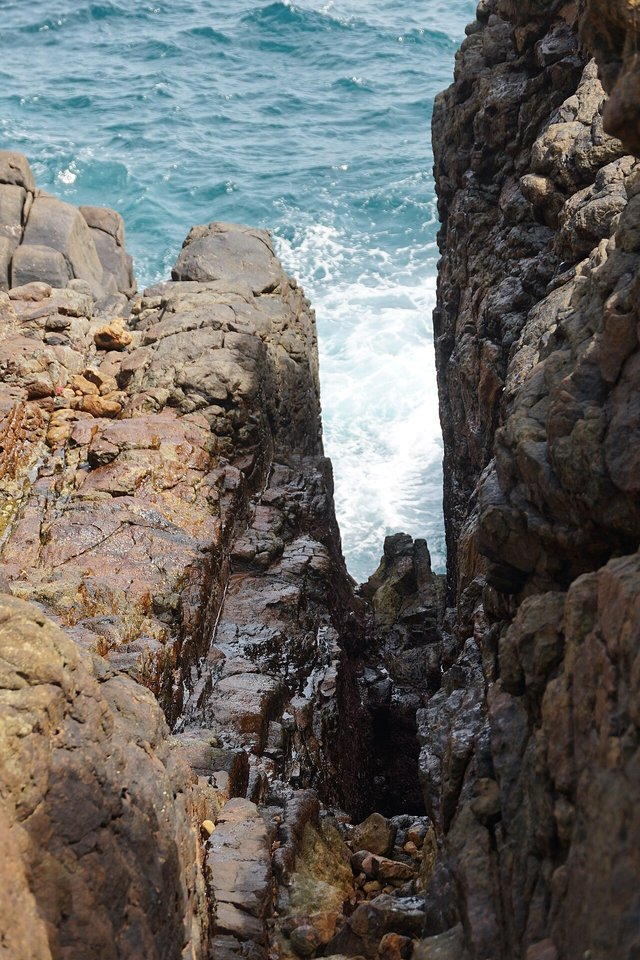
Viewpoints & PanoramasHummanaya Blowhole (Kudawella)
The second largest natural sea blowhole in the world, shooting ocean geysers up to 30 meters into the sky through a narrow rock fissure with a roaring hiss.
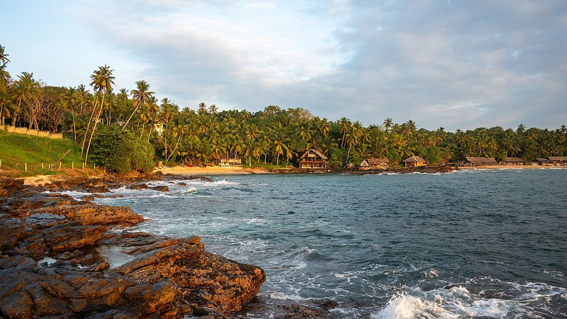
Beaches & CoastlinesTangalle Beach & Goyambokka
Endless miles of wild, uncrowded golden sands, hidden coves like Goyambokka and Silent Beach, and luxury clifftop oceanfront retreats.
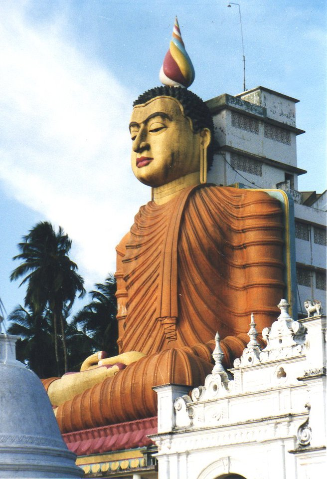
Beaches & CoastlinesHiriketiya Horseshoe Bay Surf Hub
A stunning turquoise horseshoe-shaped jungle bay where beginner beach breaks and an advanced left-hand point break meet artisan cafes and bohemian culture.
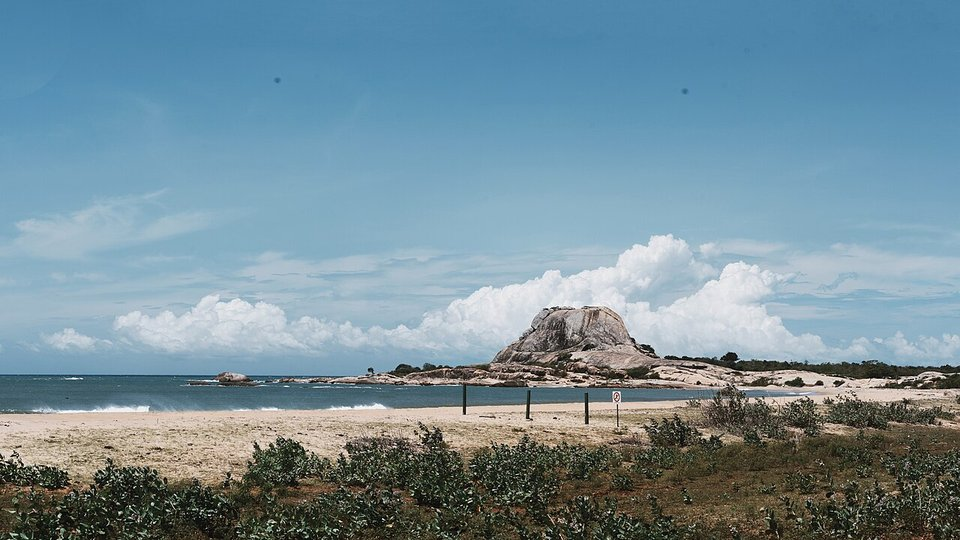
Wildlife & SafariYala National Park (Ruhuna)
Sri Lanka's flagship wildlife sanctuary, boasting one of the highest densities of leopards on Earth, alongside Asian elephants, sloth bears, and crocodiles.
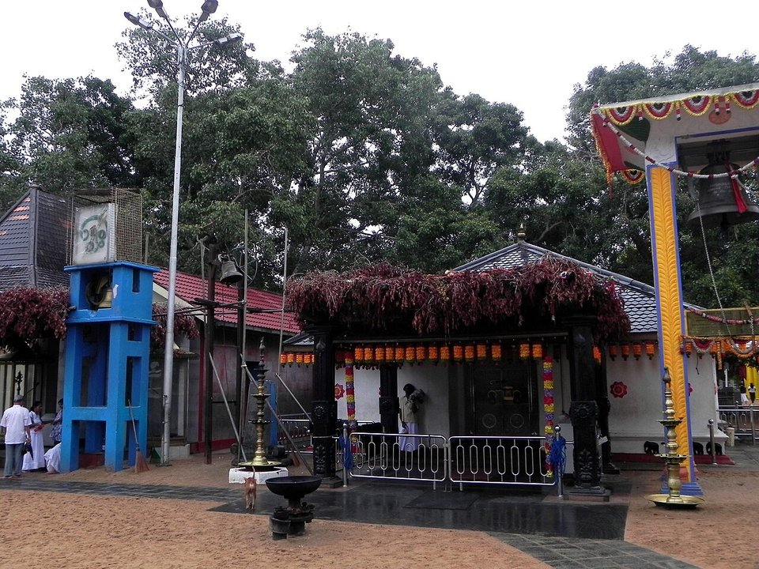
Temples & Religious SitesKataragama Sacred City (Ruhunu Maha Devalaya)
The sacred multi-faith pilgrimage city on the Menik Ganga river, where Buddhists, Hindus, Muslims, and indigenous Veddas worship God Kataragama.